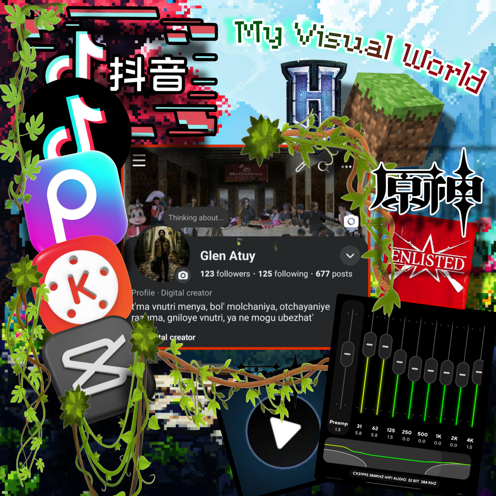
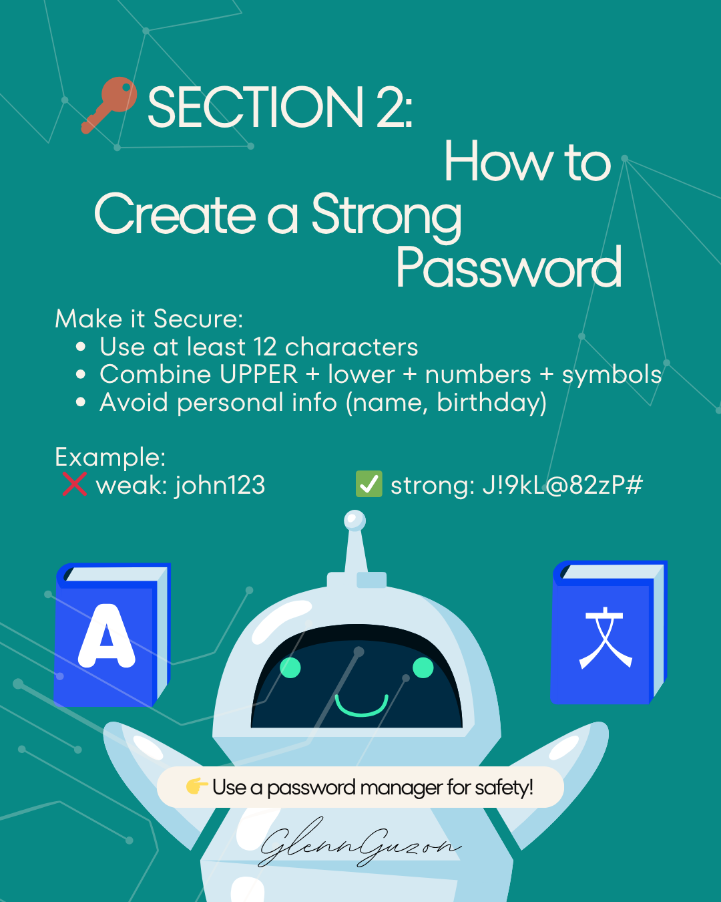
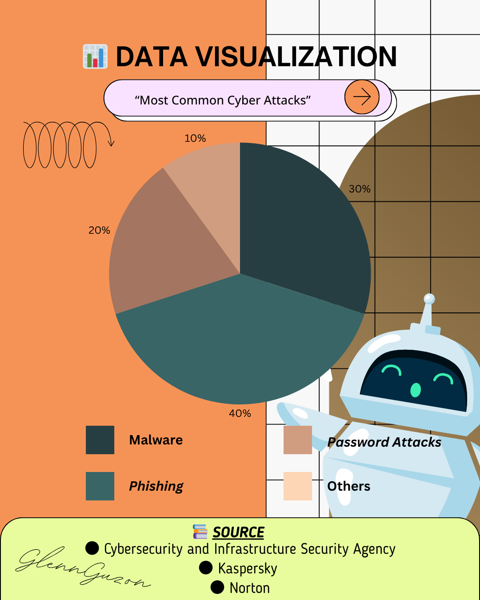

Reading
Visual
Arts
GE ELEC 3 · Final Portfolio

Table of Contents
Artist Statement
Art is somthing I like because it help me show my ideas and feelings. I started liking art when I was young and I enjoy making simple designs and drawings. Sometimes I get inspire by things around me like nature, people, and daily life. Art make me feel calm and it help me express things that are hard to say by words.
In this course, I learn that visual art is not only about drawing good but also about sending message to people. Colors, shapes, and layout can make people feel different emotions. I understand more how art can tell stories and share meaning.
My culture and experiences also affect my work because I use things that I see in my everyday life. I try to make simple but meaningful designs. I want people to understand my work even if it is not perfect. In the future, I hope to improve my skills and become a better visual communicator.
Digital Visual World Collage

Medium: Digital (Adobe Photoshop / Canva / etc.)

Observational Drawing (7 Elements)

Elements explored: Line, Shape, Form, Value, Color, Texture, Space
[Describe your subject and how you applied the 7 elements of art in your observational drawing.]
Abstract Composition


Transformation Series
Three versions showing a gradual transformation of a subject or concept.

VERSION I
The drawing shows how a realistic light bulb slowly becomes abstract art. The first is detailed and realistic, the second is simplified, and the last only uses shapes and colors. It shows the transformation from real object into creative abstract design.
Filipino-Inspired Pattern Design

Cultural Inspiration: [Region / Ethnic Group / Motif source]
This artwork uses Baybayin to show Filipino culture and identity. The border designs are inspired by traditional Filipino patterns and tribal art. I made it simple and modern while still keeping the cultural style.
Drawing or Painting Artwork

Medium: [Watercolor / Acrylic / Pencil / Digital / etc.]
This still life drawing use pencil shading to create depth and realistic effect. The objects like the bottle, fruit, glass, and cigarette were arranged carefully to show balance and contrast. Different shading techniques was used to make the objects look more realistic and have shadow. The artwork gives a calm but slightly dramatic mood because of the dark tones and smoke effect in the drawing.
Digital Poster

Theme: [Poster Theme / Advocacy / Event]
This poster is about cyber security and stoping fake news. I use blue color because it look safe and technology style. The layout is simple so people can read easy. The big cyber security image catch attention first. The message is to think before sharing online because fake news can spread fast.
Photo Narrative Series
Three photographs that tell a connected visual story.


Infographic (Cybersecurity)
IT Topic: Cyberscurity Part 1
IT Topic: Cybersecurity Section 1

IT Topic: Cybersecurity Section 2
IT Topic: Cybersecurity Section 3
IT Topic: Cybersecurity Section

IT Topic: Cybersecurity Most Common Cyber Attacks
Meme Series Creation

Creating this meme Make my brain Big Brain 🤓
Process Documentation
A look into the creative journey — sketches, drafts, and iterations for at least 3 selected works.
Observational Drawing
Module 2 · Process DocumentationDoing this Work My Hand Sudenly Sketching without my consent and basically my hand draw the Observational Drawing of the 7 Elements.


Photo Narrative Series
Module 8 · Process DocumentationGoing outside the house at morning to take pictures on our farm feels im connecting to nature and learning many compositions until its evening the sun is setting. editing this work on canva make me learm new many things in editing like how can i themed my photo on the background.


Infographic (Sybersecurity)
Module 10 · Process Documentationlearning About The cyberseecurity threats to our world means a lot to me since i can know all of thes stuff to less prevent me on cybersecurity threats, editing this on canva make me learn more stuff on designing.